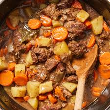

RECIPE FOR BEEF STEW

Ingredients
- Beef chuck, cut into cubes
- Carrots, sliced
- Potatoes, diced
- Onion, chopped
- Garlic, minced
- Beef broth
- Red wine (optional)
- Olive oil
- Salt and pepper
- Bay leaves
- Thyme
- Parsley for garnish
Instructions
- Heat olive oil in a large pot over medium heat.
- Add chopped onion and minced garlic, sauté until translucent.
- Add beef cubes, season with salt and pepper, and brown on all sides.
- Pour in red wine (if using) and let it simmer for a few minutes.
- Add beef broth, bay leaves, and thyme. Bring to a boil.
- Reduce heat to low, cover, and let it simmer for about 1.5 to 2 hours until beef is tender.
- Add sliced carrots and diced potatoes, cook for an additional 30-40 minutes until vegetables are tender.
- Remove bay leaves, adjust seasoning if necessary.
- Garnish with fresh parsley before serving.
- Enjoy your hearty beef stew!
Home